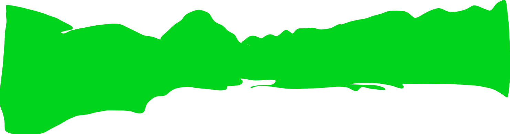
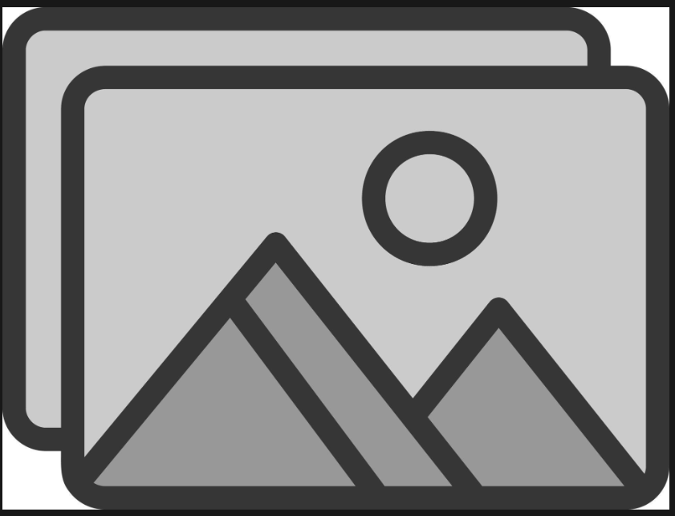

PRODUCT ENGINEER
Nací entre volcanes, a 2,754 m sobre el nivel del mar. Estudié periodismo y hace 8 años cambié de profesión y país. Estudié en España un Master en Gestión de la Información y empecé a programar con una escuela autogestionada en Valencia, la Devescola. Hace 6 años he desarrollado software para ClimateTrade, QueryLayer y Passporter.

A short paragraph on the project — what it was, what you built, what shipped. Two columns of copy sit under each pair of shots.
A short paragraph on the project — what it was, what you built, what shipped. Two columns of copy sit under each pair of shots.
Role — Company (years). What the team did and what you owned.
Role — Company (years). What the team did and what you owned.
